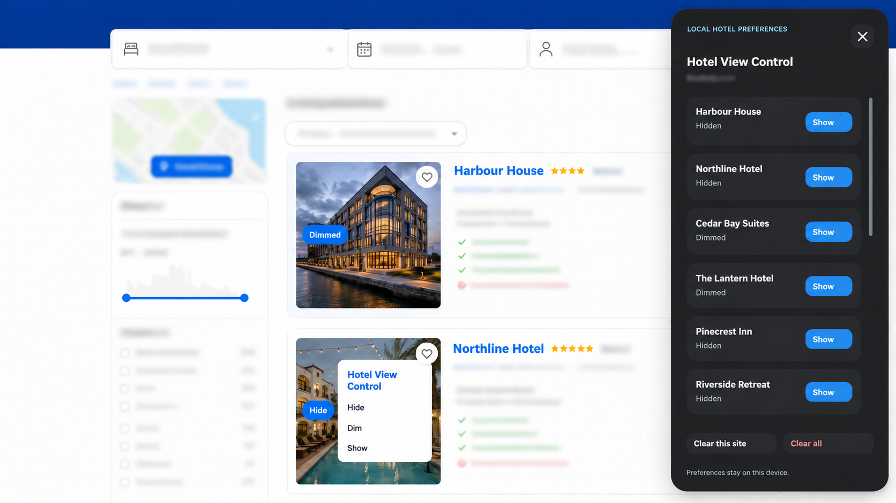
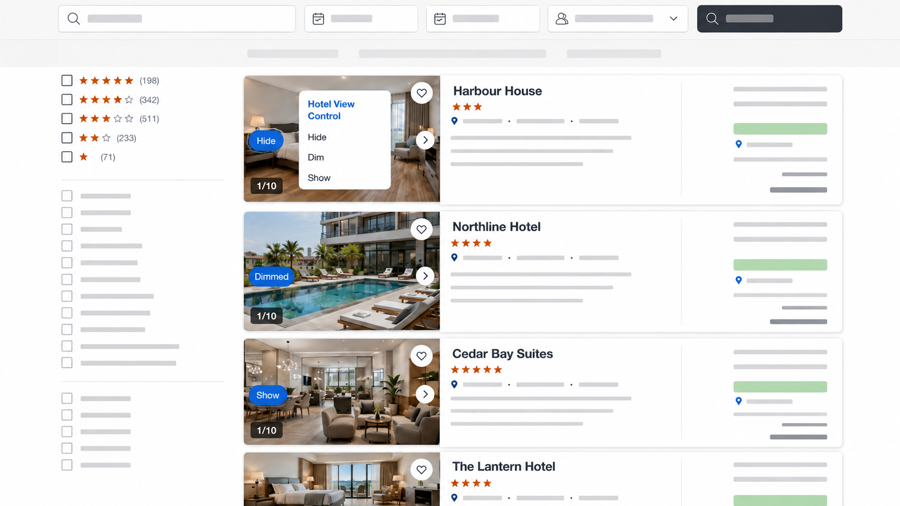
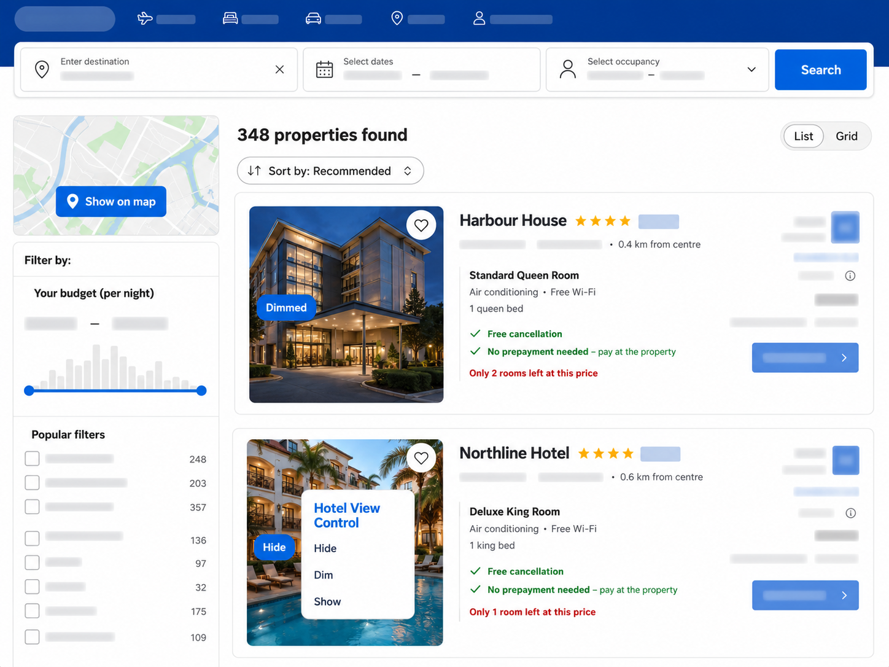

Hide
Collapse results you no longer need to see. Restore them whenever you want.
A LOCAL-ONLY BROWSER EXTENSION
Hotel View Control lets you hide or dim hotel listings you have already reviewed on supported travel search sites. Your preferences stay in your browser.
Collapse results you no longer need to see. Restore them whenever you want.
Keep a listing visible while making it clear that you have already considered it.
Selected hotel-card details and preferences use local Chrome storage only—no account, analytics, remote code, or external database.
HOW IT LOOKS
Illustrated examples of Hotel View Control in use. Hotel details and surrounding search pages have been anonymised.



The extension changes only the local appearance of result cards. It does not change prices, ratings, availability, booking actions, checkout, payments, reviews, rankings, or advertisements.